Hệ Thống Kết Quả Bài Tập Thực Hành
Chọn từng bài ở danh mục bên trái để xem chi tiết báo cáo và minh chứng sản phẩm.
Bài 1 - Thao tác cơ bản với tệp tin và thư mục
Mục tiêu: Quy hoạch không gian lưu trữ khoa học và thiết lập quy tắc định danh tài liệu.
1. Mở File Explorer: Nhấn tổ hợp phím Windows + E hoặc nhấp vào biểu tượng thư mục màu vàng trên thanh tác vụ.
{kind=link}
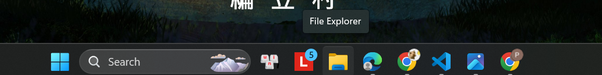
2. Truy cập ổ đĩa/thư mục: Ở cột bên trái, nhấp vào This PC, sau đó nhấp đúp vào một ổ đĩa không phải ổ hệ thống (ví dụ: ổ D: hoặc E:). Nếu chỉ có ổ C:, hãy vào thư mục Documents.
{kind=link}
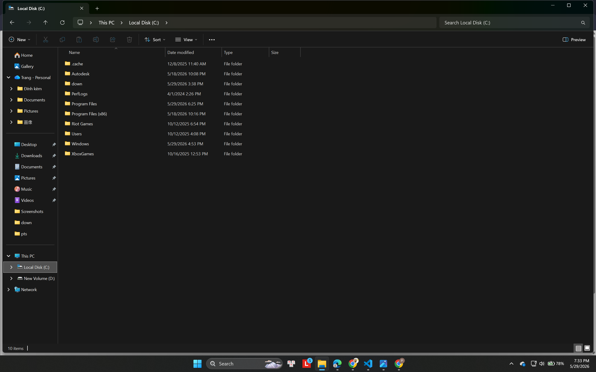
3. Tạo thư mục mới: Nhấp chuột phải vào một khoảng trống -> chọn New -> Folder. Đặt tên thư mục là ThucHanh_hotensinhvien (ví dụ: ThucHanh_NguyenVanA). Nhấn Enter.
{kind=link}
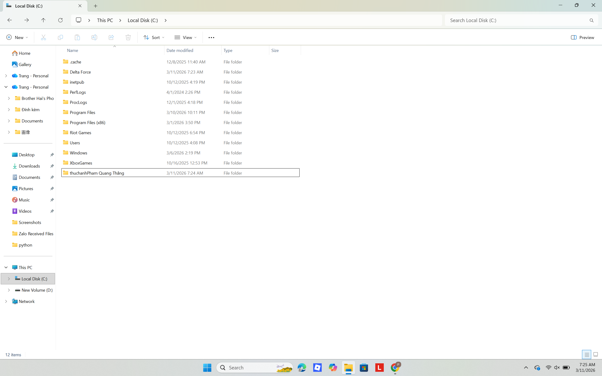
4. Vào thư mục vừa tạo: Nhấp đúp vào thư mục ThucHanh_NguyenVanA.
{kind=link}
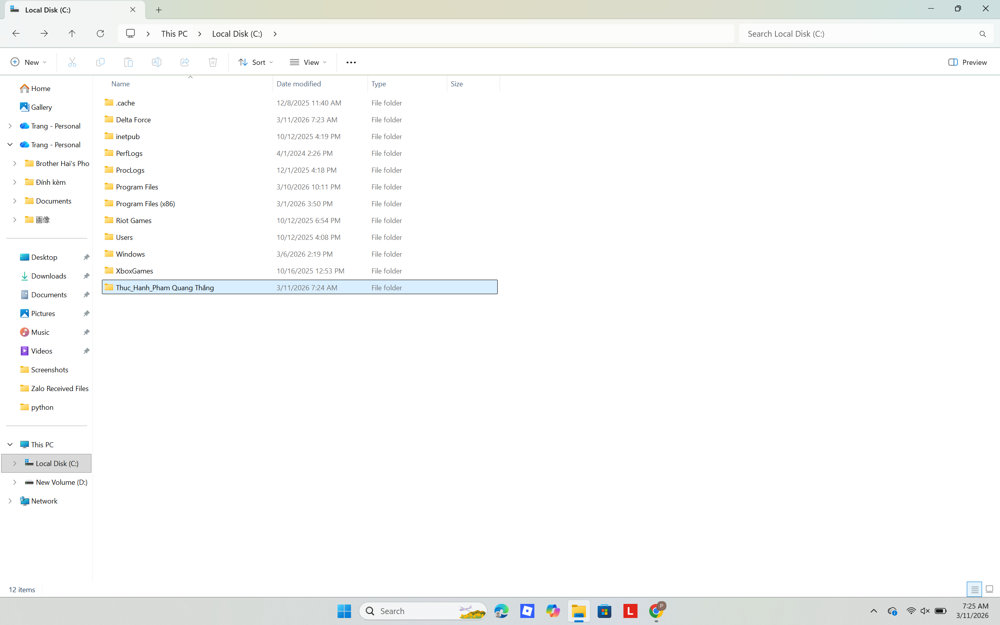
5. Tạo tệp tin văn bản: Nhấp chuột phải vào khoảng trống -> New -> Text Document. Đặt tên là GhiChu.txt. Nhấn Enter.
{kind=link}
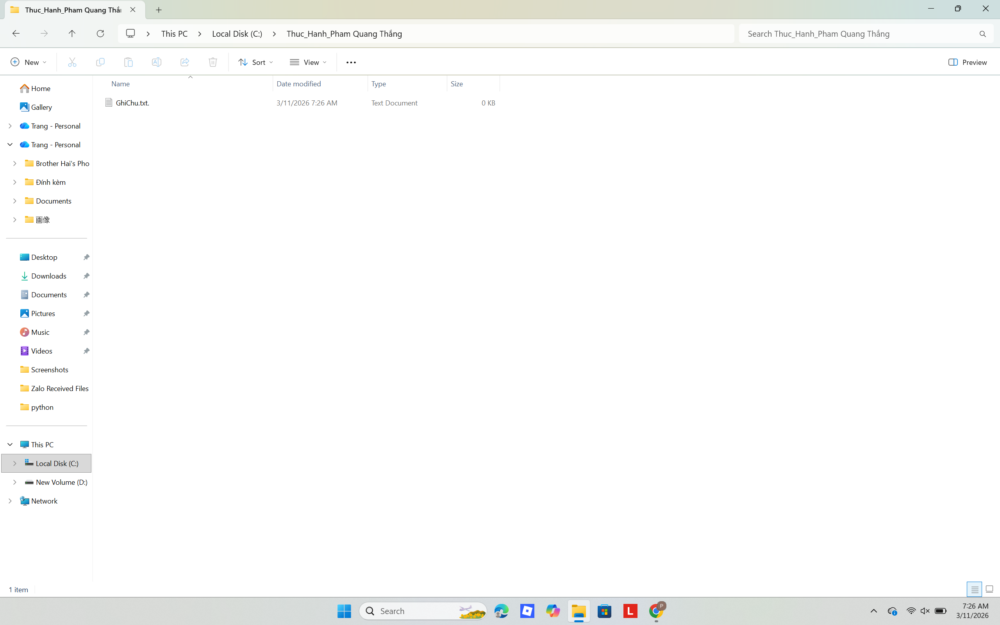
6. Đổi tên tệp tin: Nhấp chuột phải vào tệp GhiChu.txt -> chọn Rename. Đổi tên thành GhiChuQuanTrong.txt. Nhấn Enter.
{kind=link}
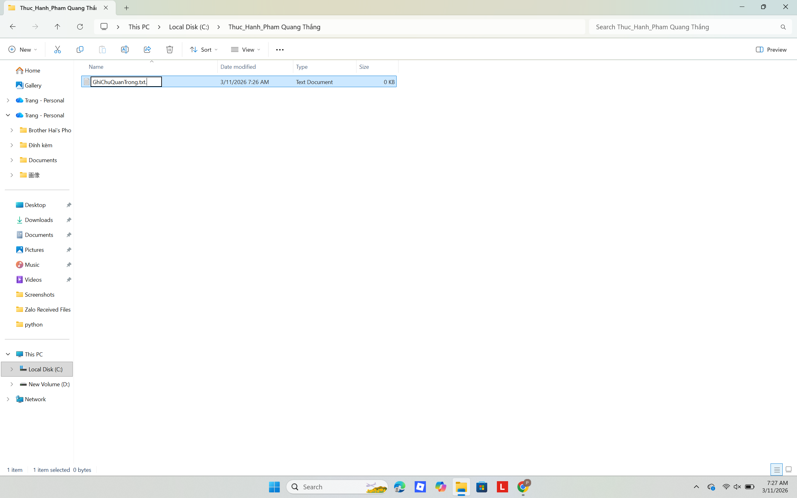
{kind=link}
8. Sao chép tệp tin: Nhấp chuột phải vào tệp GhiChuQuanTrong.txt -> chọn Copy. Nhấp đúp vào thư mục TaiLieu, nhấp chuột phải vào khoảng trống -> chọn Paste. Bạn có một bản sao mới.
{kind=link}
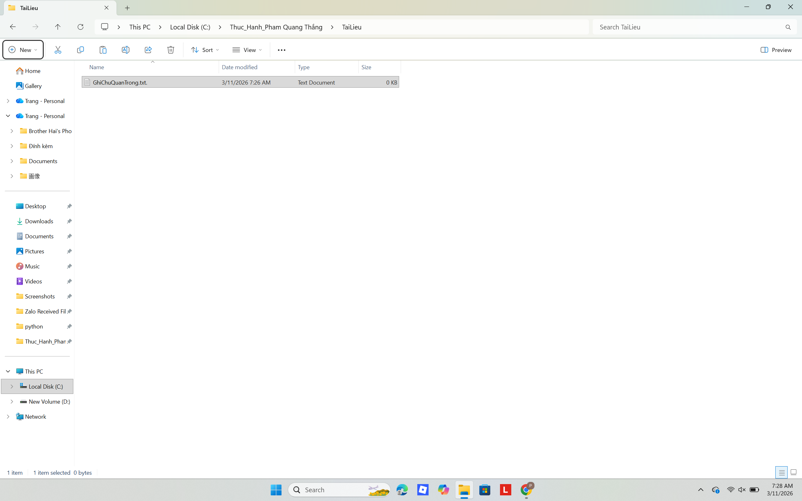
9. Di chuyển tệp tin: Tạo tệp DiChuyen.txt, nhấp chuột phải -> chọn Cut. Vào thư mục TaiLieu, nhấp chuột phải -> Paste. Tệp gốc đã chuyển sang vị trí mới.
{kind=link}
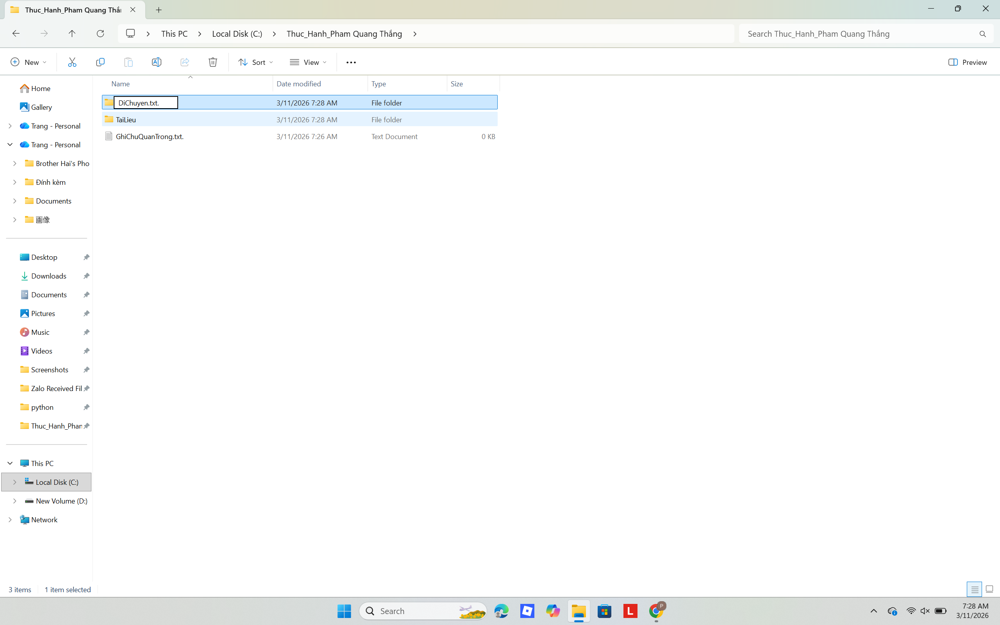
10. Xóa tệp tin: Trong thư mục TaiLieu, nhấp chuột phải vào tệp GhiChuQuanTrong.txt -> chọn Delete. Tệp sẽ được chuyển vào Thùng rác (Recycle Bin).
{kind=link}
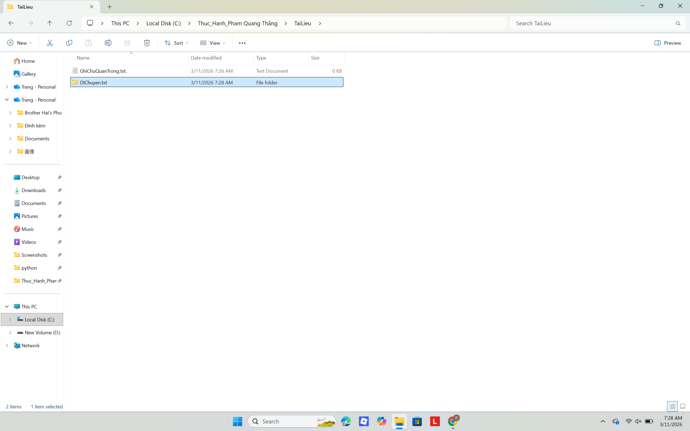
11. Xóa vĩnh viễn: Chọn tệp DiChuyen.txt, nhấn giữ phím Shift và nhấn phím Delete. Nhấp đồng ý, tệp sẽ bị xóa vĩnh viễn mà không qua Thùng rác.
{kind=link}
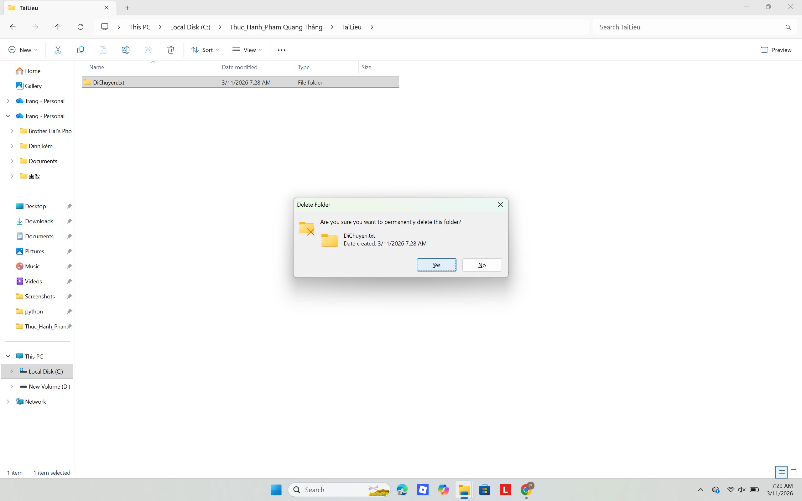
12. Khôi phục từ Thùng rác: Tìm biểu tượng Recycle Bin trên màn hình nền. Tìm tệp GhiChuQuanTrong.txt đã xóa, nhấp chuột phải và chọn Restore.
{kind=link}
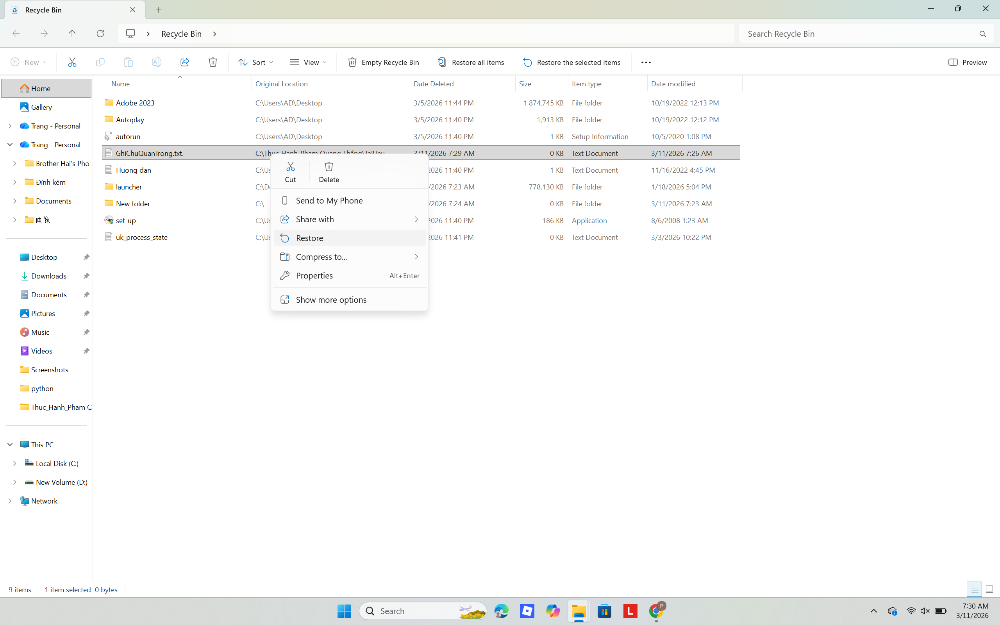
Bài 2 - Tìm kiếm và đánh giá thông tin học thuật
Mục tiêu: Khai thác dữ liệu nghiên cứu chuyên sâu thông qua các toán tử nâng cao.
1. Chủ đề nghiên cứu
"Sự ảnh hưởng của nguyên tắc thiết kế Bauhaus đến giao diện người dùng (UI/UX) hiện đại."
Lý do chọn: Kết nối giữa lịch sử thiết kế công nghiệp (Bauhaus) và ứng dụng thực tiễn trong thời đại số (Graphic/Digital Design).
2. Chiến lược tìm kiếm thông tin
- Từ khóa (Keywords): Bauhaus principles in UI/UX, Minimalism web design, Grid system digital interface, Form follows function digital.
- Toán tử nâng cao:
("Bauhaus" OR "Swiss Design") AND ("UI" OR "UX" OR "Web Design") site:.edu - Nguồn khai thác: CSDL IEEE Xplore, ACM Digital Library, Google Scholar, thư viện điện tử, và các kho lưu trữ tổ chức nghiên cứu thiết kế.
3, 4 & 5. Bảng tổng hợp và Đánh giá độ tin cậy nguồn tin
Dưới đây là bảng hệ thống hóa 10 tài liệu tham khảo (gồm 5 bài báo khoa học, 2 sách chuyên khảo và 3 nguồn internet uy tín), được đánh giá dựa trên thang điểm 5 sao.
| STT | Tên tài liệu & Phân loại | Tác giả & Cơ quan xuất bản | Đánh giá (Phương pháp, Trích dẫn, Cập nhật) | Độ tin cậy |
|---|---|---|---|---|
| 1 | [Bài báo KH] The Influence of Bauhaus on Modern User Interfaces | A. Smith Tạp chí: IEEE Xplore Chuyên gia: Peer-reviewed |
Phương pháp: Phân tích đối chiếu UI định lượng. Cập nhật & Trích dẫn: 2023, >150 trích dẫn. |
|
| 2 | [Bài báo KH] Minimalism and Functionalism in Digital Design | J. Doe Tạp chí: Design Studies (Elsevier) Chuyên gia: GS thiết kế tương tác |
Phương pháp: Phân tích định tính lịch sử. Cập nhật & Trích dẫn: 2022, >80 trích dẫn. |
|
| 3 | [Bài báo KH] Typography evolution: from print to screens | K. Lee CSDL: ACM Digital Library Chuyên gia: Nhà nghiên cứu HCI |
Phương pháp: Thực nghiệm theo dõi mắt (Eye-tracking). Cập nhật: 2021. |
|
| 4 | [Bài báo KH] Grid systems in responsive web design | M. Chen Tạp chí: Int. J. of HCI Chuyên gia: Hội đồng độc lập |
Phương pháp: Thống kê UX/UI web đa nền tảng. Cập nhật: 2023. |
|
| 5 | [Bài báo KH] Evaluating 'Form follows function' in app usability | R. Garcia Kỷ yếu: CHI Conference Chuyên gia: Hội nghị hàng đầu |
Phương pháp: Thử nghiệm A/B trên người dùng thực. Cập nhật: 2021. |
|
| 6 | [Sách] Bauhaus 1919-1933 | Magdalena Droste NXB: Taschen Cơ quan: NXB nghệ thuật hàng đầu |
Phương pháp: Nghiên cứu lưu trữ lịch sử. Hạn chế: Ít cập nhật digital (bản 2019). |
|
| 7 | [Sách] Universal Principles of Design | W. Lidwell, K. Holden NXB: Rockport Chuyên gia: Chuyên khảo tổng hợp |
Phương pháp: Đúc kết nguyên lý học thuật. Trích dẫn: Kinh điển, >2000 trích dẫn. |
|
| 8 | [Internet] Minimalist Web Design: When Less is More | Page Laubheimer Nielsen Norman Group (NN/g) Cơ quan: Tổ chức UX số 1 thế giới |
Phương pháp: Dựa trên nghiên cứu hành vi thực chứng. Cập nhật: Liên tục. |
|
| 9 | [Internet] What is Bauhaus Design? | R. Friis Interaction Design Foundation Cơ quan: Tổ chức giáo dục (IxDF) |
Phương pháp: Bài giảng có peer-review nội bộ. Cập nhật: 2023. |
|
| 10 | [Internet] Bauhaus Principles Of Web Design | S. Bradley Smashing Magazine Cơ quan: Tạp chí thiết kế web uy tín |
Tác giả: Chuyên gia thực hành. Hạn chế: Mang tính góc nhìn cá nhân. |
Minh chứng kết quả tìm kiếm
{kind=link}
{kind=link}
{kind=link}
{kind=link}
Bài 3 - Viết Prompt hiệu quả cho các tác vụ học tập
Mục tiêu: Làm chủ nghệ thuật giao tiếp với AI để tối ưu kết quả đầu ra.
1. Thực hành so sánh các cấp độ Prompt
- Cơ bản "Tóm tắt bài viết này cho tôi: [Dán nội dung về phong cách Bauhaus]."
- Cải tiến "Tóm tắt bài viết sau về Bauhaus trong khoảng 300 chữ. Hãy chia thành các mục: Bối cảnh ra đời, Đặc điểm chính và Ảnh hưởng đến thiết kế hiện đại."
- Nâng cao (Role Prompting + CoT): "Bạn là một chuyên gia lịch sử nghệ thuật. Hãy đọc tài liệu dưới đây và thực hiện tóm tắt theo các bước: 1. Liệt kê 5 từ khóa quan trọng nhất. 2. Phân tích triết lý 'Form follows Function'. 3. Viết một bản tóm tắt súc tích cho sinh viên thiết kế đồ họa, nhấn mạnh vào tính ứng dụng thực tế."
- Cơ bản "Giải thích Ma trận trong Đại số tuyến tính là gì?"
- Cải tiến "Giải thích khái niệm Ma trận cho một sinh viên năm nhất UET. Hãy dùng các ví dụ thực tế trong đời sống để minh họa."
- Nâng cao (Analogies + Step-by-step): "Hãy đóng vai một giảng viên đại học tâm huyết. Giải thích khái niệm 'Ma trận' bằng cách sử dụng phép ẩn dụ về một bảng điểm hoặc lưới tọa độ trong game. Chia giải thích thành 3 cấp độ: Cho đứa trẻ 10 tuổi, Cho sinh viên đại học, và Ứng dụng của nó trong xử lý ảnh kỹ thuật số."
- Cơ bản "Tạo cho tôi 5 câu hỏi trắc nghiệm về vòng lặp trong Python."
- Cải tiến "Tạo 5 câu hỏi trắc nghiệm về vòng lặp for và while trong Python, kèm theo đáp án và giải thích ngắn gọn cho mỗi câu."
-
Nâng cao (Few-shot + Constraint): "Tôi đang ôn thi môn Cơ sở lập trình. Hãy tạo 5 câu hỏi trắc nghiệm nâng cao về List Comprehension. Định dạng như sau:
Câu hỏi: [Nội dung]
Các lựa chọn: A, B, C, D
Đáp án đúng: [Đáp án]
Giải thích: [Tại sao đúng/sai] (Ví dụ mẫu: Câu hỏi: Kết quả của [x**2 for x in range(3)] là gì? -> Đáp án: [0, 1, 4])"
2. Đánh giá và So sánh Hiệu quả Đầu ra
Dựa trên quá trình thử nghiệm thực tế với 3 tác vụ trên, dưới đây là bảng phân tích trực quan về sự khác biệt chất lượng giữa các cấp độ Prompt:
| Tiêu chí Đánh giá | Prompt Cơ bản | Prompt Cải tiến | Prompt Nâng cao |
|---|---|---|---|
| Độ bám sát mục tiêu | Thấp Chung chung, dễ lạc đề |
Khá Đúng trọng tâm nhưng chưa sâu |
Tuyệt đối Giải quyết đúng "nỗi đau" người học |
| Cấu trúc & Định dạng | Văn bản thô, lộn xộn | Có chia đoạn, dễ đọc | Tuân thủ 100% định dạng (JSON, Bảng...) |
| Giọng văn chuyên môn | Như bách khoa toàn thư | Rõ ràng, mạch lạc | Mô phỏng chính xác văn phong chuyên gia |
| Chi phí thời gian tinh chỉnh | Tốn nhiều thời gian viết lại | Cần sửa đổi một chút | Sử dụng được ngay (Ready-to-use) |
3. Tại sao các Prompt nâng cao lại hiệu quả hơn?
Prompt nâng cao điều hướng (steering) mô hình AI hiệu quả hơn nhờ 3 yếu tố cốt lõi:
1. Thiết lập Persona
Gán cho AI một vai trò giúp giới hạn không gian dữ liệu, ưu tiên thuật ngữ và ngữ điệu phù hợp.
2. Chain-of-Thought (CoT)
Buộc mô hình xử lý hệ thống theo từng bước, giúp giảm thiểu hiện tượng "ảo tưởng" (hallucination).
3. Few-shot & Constraints
Các ví dụ mẫu giúp AI hiểu rõ "khuôn mẫu". Kết quả đầu ra đồng nhất, tiết kiệm tối đa thời gian.
4. Bộ khung viết Prompt "C-R-E-A-T-E"
Để đạt được kết quả chất lượng cao như mong đợi, tôi áp dụng bộ khung sau:
- C - Context (Bối cảnh): Luôn cung cấp ngữ cảnh rõ ràng. Context càng cụ thể, câu trả lời càng sát thực tế.
- R - Role (Vai trò): Luôn chỉ định AI đóng vai ai (VD: "chuyên gia", "giảng viên").
- E - Explicit Task (Tác vụ cụ thể): Sử dụng động từ mạnh (Tóm tắt, phân tích, so sánh) và mô tả rõ đầu ra.
- A - Audience (Đối tượng): Xác định rõ người đọc để quyết định độ phức tạp của ngôn ngữ.
- T - Tone & Format (Giọng văn & Định dạng): Yêu cầu định dạng (Markdown, JSON, Bảng) và giọng văn (Học thuật, hài hước...).
5. Minh chứng quá trình thao tác
{kind=link}
{kind=link}
{kind=link}
{kind=link}
Bài 4 - Sử dụng công cụ hợp tác trực tuyến cho dự án nhóm
Mục tiêu: Tối ưu hóa hiệu suất làm việc tập thể trên các nền tảng số đám mây.
BÁO CÁO CÁ NHÂN: QUẢN LÝ VÀ HỢP TÁC TRỰC TUYẾN TRONG DỰ ÁN NHÓM
- Họ và tên: Phạm Quang Thắng
- Dự án thực hiện: Xây dựng thiết kế dự án 2d
- Vai trò cá nhân: Thành viên phụ trách nội dung
I. LỰA CHỌN CÔNG CỤ HỢP TÁC
Trong quá trình thực hiện dự án thiết kế 2D, khối lượng tài nguyên (asset đồ họa, character design, background) và tài liệu cốt truyện cần xử lý là rất lớn. Do đó, tôi đã thiết lập và sử dụng đồng bộ hệ sinh thái 4 công cụ sau để tối ưu hóa hiệu suất làm việc cá nhân cũng như đảm bảo sự xuyên suốt cho cả nhóm:
- Quản lý dự án: Trello (Phân bổ luồng công việc, theo dõi vòng đời của từng bản thiết kế).
- Soạn thảo cộng tác: Google Docs (Đồng biên soạn tài liệu Game Design Document - GDD).
- Giao tiếp & Họp trực tuyến: Discord & Google Meet (Review trực tiếp, trao đổi tiến độ hàng ngày).
- Lưu trữ & Chia sẻ: Google Drive (Quản lý Data gốc, thiết lập phân quyền truy cập).
II. QUÁ TRÌNH THỰC HIỆN VÀ MINH CHỨNG HOẠT ĐỘNG
1. Quản trị dự án trực quan (Trên Trello)
1.1. Theo dõi luồng công việc tổng thể
Hoạt động: Tôi tham gia xây dựng bảng Kanban cho nhóm, phân chia luồng công việc thành các cột rõ ràng: Backlog (Chờ xử lý) -> To-do (Cần làm) -> Doing (Đang vẽ) -> Review (Chờ duyệt) -> Done (Hoàn thành). Việc này giúp tôi nắm bắt được tổng thể dự án đang đi đến đâu và khối lượng việc của mình nằm ở mức nào.
{kind=link}
Kết quả: 100% nhiệm vụ được hoàn thành đúng hạn, trạng thái thẻ chuyển từ "Doing" sang "Done" rõ ràng.
{kind=link}
1.2. Quản lý chi tiết từng đầu mục thiết kế
Hoạt động: Bên trong mỗi thẻ nhiệm vụ do tôi phụ trách (VD: "Thiết kế Main Character"), tôi thiết lập hệ thống Checklist chi tiết cho từng công đoạn (Line art -> Base color -> Shading -> Render). Tôi luôn đính kèm trực tiếp file nháp (Attachment) và cài đặt Deadline sát sao để không làm chậm tiến độ khâu lập trình.
{kind=link}
2. Soạn thảo và chỉnh sửa tài liệu cộng tác (Trên Google Docs)
2.1. Đóng góp nội dung cốt lõi
Hoạt động: Tôi trực tiếp đảm nhận biên soạn phần "Phân tích phong cách đồ họa (Art Style)" và "Mô tả tuyến nhân vật" trong file GDD chung. Các đóng góp của tôi đảm bảo sự liên kết chặt chẽ giữa ý tưởng văn bản và bản vẽ thực tế.
{kind=link}
2.2. Tương tác đa chiều trên văn bản
Hoạt động: Không chỉ viết phần của mình, tôi còn sử dụng tính năng "Suggesting" (Đề xuất chỉnh sửa) để tối ưu hóa từ ngữ cho đồng đội. Khi có thông số thiết kế cần chốt, tôi bôi đen và dùng tính năng "Comment" để tag trực tiếp tên Leader vào xác nhận.
3. Giao tiếp và xử lý vấn đề tức thời (Trên Discord & Meet)
3.1. Báo cáo tiến độ và chia sẻ tài nguyên hàng ngày
Hoạt động: Nhằm đảm bảo thông tin thông suốt, tôi liên tục cập nhật các bản phác thảo (WIP - Work in Progress) lên kênh #art-feedback của Discord. Tôi chủ động ping (@) các thành viên nhóm Coder để đối chiếu định dạng file ảnh xuất ra có phù hợp với Engine Game hay không.
{kind=link}
3.2. Tổ chức họp Review trực tuyến
Hoạt động: Khi gặp các vấn đề phức tạp về phối màu hay thiết kế UI khó diễn đạt bằng lời, tôi chủ động mở phòng họp trên Google Meet/Discord Voice. Tại đây, tôi dùng tính năng Share Screen (Chia sẻ màn hình) trực tiếp phần mềm thiết kế để điều chỉnh ngay lập tức theo góp ý của nhóm.
{kind=link}
4. Quy chuẩn hóa hệ thống lưu trữ (Trên Google Drive)
4.1. Xây dựng cây thư mục hệ thống
Hoạt động: Để tránh tình trạng "lạc mất file" khi dự án phình to, tôi đã thiết kế một cây thư mục phân cấp logic trên Drive dùng chung: 01_Tài_Liệu_Chung, 02_Drafts_Phác_Thảo, và 03_Final_Render_Xuất_Game. Cấu trúc này giúp bất kỳ ai trong nhóm cũng có thể tìm thấy file mình cần trong vòng 10 giây.
{kind=link}
4.2. Quản lý phiên bản và bảo mật dữ liệu
Hoạt động: Tôi áp dụng quy tắc đặt tên file nghiêm ngặt: [Ngày]_[Tên_Asset]_V[Số phiên bản] (VD: 1503_BackgroundLevel1_V2.ai). Đồng thời, tôi thiết lập quyền phân quyền (Permission) chặt chẽ: chỉ có Họa sĩ (Owner/Editor) mới được quyền xóa/sửa file gốc, các thành viên khác chỉ có quyền Tải xuống (Viewer).
{kind=link}
{kind=link}
III. TỰ ĐÁNH GIÁ VÀ BÀI HỌC KINH NGHIỆM
1. Kỹ năng quản lý cá nhân
Việc vận hành trơn tru khối lượng công việc khổng lồ của dự án 2D giúp tôi nhận ra tầm quan trọng của việc "chẻ nhỏ mục tiêu". Trello đã giúp tôi không bị ngợp trước deadline. Thay vì nhìn vào áp lực "Phải vẽ xong 1 level", tôi tập trung giải quyết từng checklist nhỏ nhặt nhất.
2. Khả năng thích ứng công nghệ
Tôi nhận ra sức mạnh của việc đồng bộ hóa dữ liệu. Sự kết hợp giữa khả năng soạn thảo tức thời của Docs và không gian lưu trữ an toàn của Drive đã loại bỏ hoàn toàn rủi ro mất dữ liệu, đồng thời rèn luyện cho tôi thói quen quản lý tệp tin một cách chuyên nghiệp như trong các studio thiết kế thực thụ.
3. Bài học về hợp tác số
Giao tiếp trực tuyến trong lĩnh vực sáng tạo đòi hỏi sự trực quan tuyệt đối. Một tấm ảnh Share Screen hoặc một bản nháp gửi qua Discord kèm theo các dấu khoanh đỏ giải quyết vấn đề nhanh gấp 10 lần những đoạn chat dài dòng. Hơn nữa, việc duy trì phản hồi nhanh (dùng Emoji, thả react) giúp giữ nhịp độ làm việc và tạo động lực rất lớn cho toàn nhóm.
Bài 5 - Sử dụng AI tạo sinh để hỗ trợ sáng tạo nội dung
Mục tiêu: Ứng dụng mô hình AI tạo sinh để thiết kế hình ảnh và sản xuất nội dung số.
Báo Cáo Dự Án: Sáng Tạo Nội Dung Đa Phương Tiện
- Chủ đề: Thiết kế đồ họa và hành trình trở thành Graphic Designer
- Đối tượng: Học sinh THPT, sinh viên mới bắt đầu (Gen Z)
I. Giai đoạn 1: Soạn thảo Nội dung & Copywriting
Trước khi sử dụng công cụ AI, tôi tập trung chốt ý tưởng cốt lõi và biên soạn kịch bản chi tiết. Điều này đảm bảo nội dung có linh hồn và thông điệp cá nhân rõ ràng.
Tôi đã hoàn thành:
- Kịch bản Blog: "5 nguyên tắc thiết kế cơ bản cho người mới".
- Kịch bản Video: Series "1 phút học thiết kế" (Tips nhanh, Before/After).
[Nháp Kịch bản Blog - Trích]
...Làm sao để AI hiểu rằng tôi muốn truyền tải sự nhiệt huyết? Phần kịch bản này cần nhấn mạnh triết lý CMYK...
{kind=link}
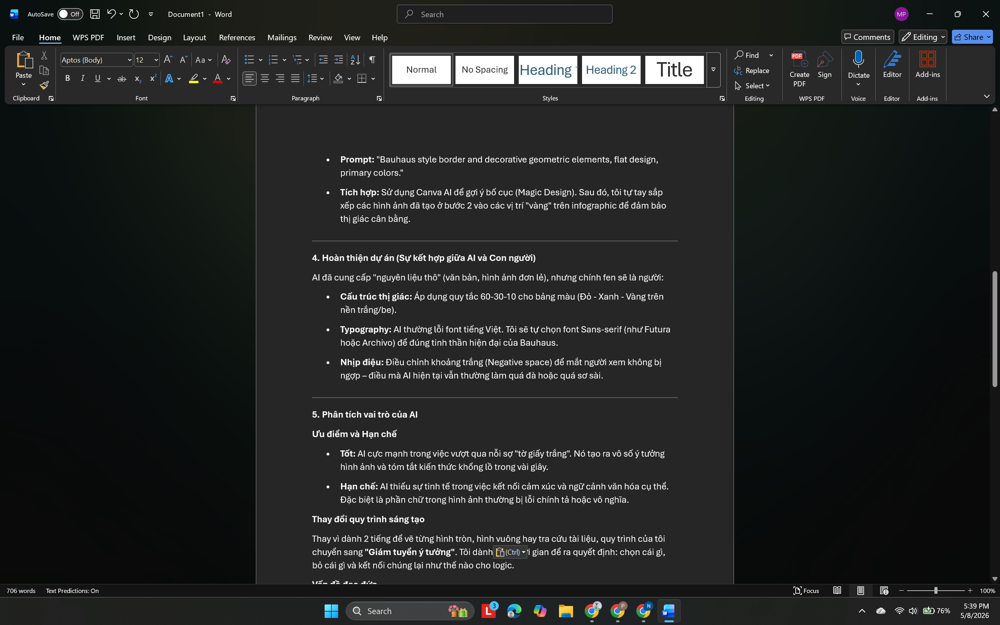
Minh chứng: Giai đoạn soạn thảo kịch bản (Copywriting)
II. Giai đoạn 2: Thao tác điều khiển AI (Prompt Engineering)
Sử dụng tư duy **Prompt Engineering**, tôi thực hiện quá trình tương tác lặp lại với AI để chuyển đổi kịch bản văn bản thành các asset đồ họa và video chi tiết. Quá trình gồm 3 bước thao tác cốt lõi:
{kind=link}
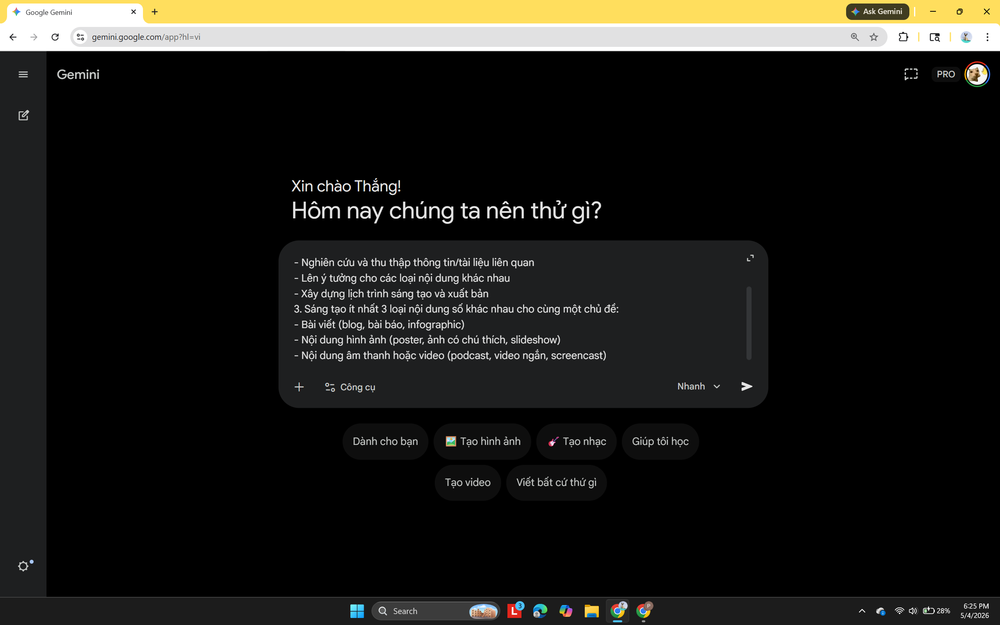
Thao tác 1: Khởi tạo Prompt
Nhập kịch bản chi tiết, xác định Persona là chuyên gia lịch sử thiết kế để AI đưa ra các đề xuất concept chính xác.{kind=link}
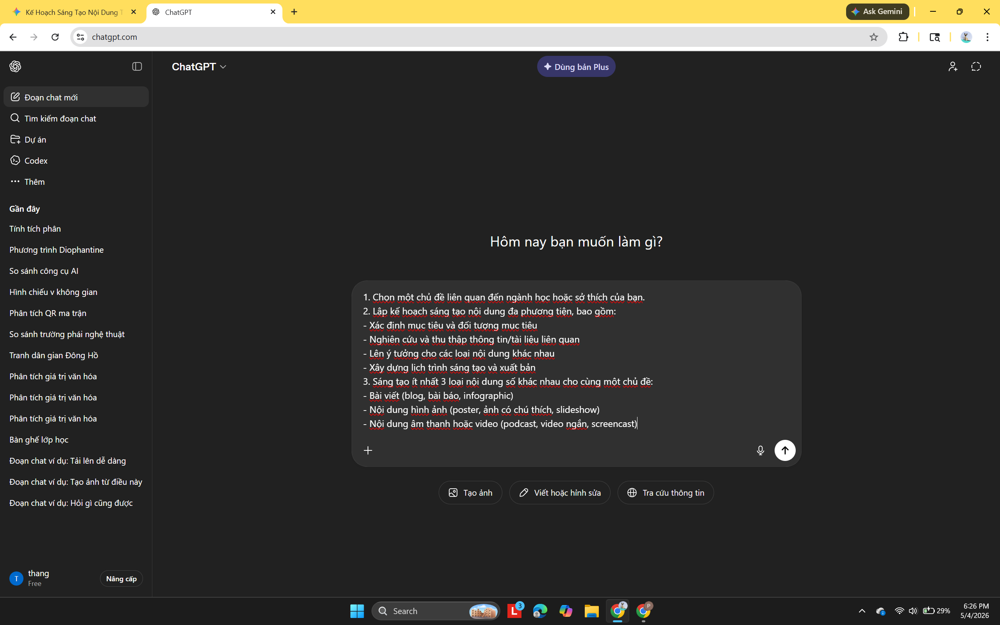
Thao tác 2: Tinh chỉnh Visual
Lặp Prompt để AI điều chỉnh độ sáng, bố cục, và phong cách Poster (Minimalism) cho khớp với ý tưởng.{kind=link}
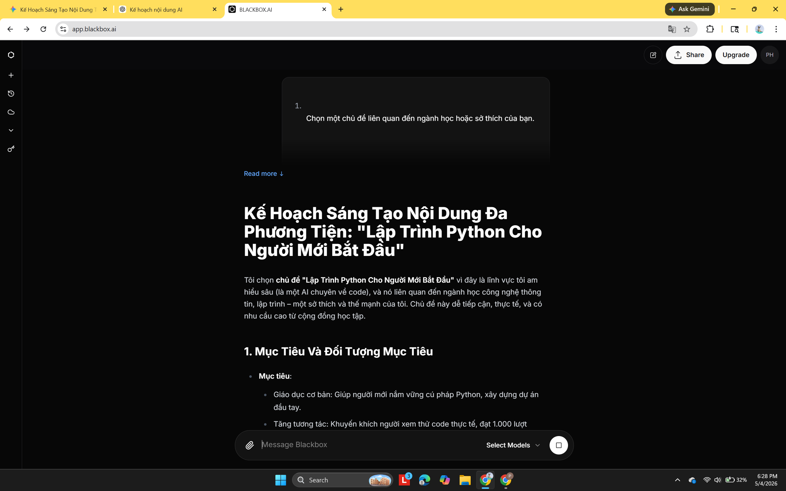
Thao tác 3: Tạo nội dung đi kèm
Điều khiển AI xuất ra tiêu đề blog giật gân, caption video TikTok ngắn gọn và tóm tắt nguyên lý bố cục.III. Sản phẩm tạo ra: Poster truyền cảm hứng
Kết quả của quá trình điều khiển AI kỹ lưỡng là sản phẩm **Poster truyền cảm hứng: "Start your design journey"**. Sản phẩm tuân thủ nghiêm ngặt nguyên lý bố cục 1/3 và tối ưu hóa hiển thị số, sẵn sàng chia sẻ lên các nền tảng Gen Z.
{kind=link}
| Hệ sinh thái | Sản phẩm |
|---|---|
| Văn bản | 1 bài blog |
| Đồ họa | 1 infographic, 1 poster |
| Video | 1 video ngắn |
IV. Khó khăn & Bài học kinh nghiệm
• Khó khăn: Thiếu hụt ý tưởng sáng tạo đột phá ban đầu -> Giải pháp: Tăng cường tham khảo kho tư liệu khổng lồ trên Pinterest.
• Khó khăn: Chưa thành thạo các kỹ thuật cắt ghép video phức tạp trên CapCut -> Giải pháp: Xem thêm hướng dẫn bổ sung từ YouTube.
Một kế hoạch chi tiết, một kịch bản Copywriting chuẩn chỉnh (đã soạn thảo ban đầu) là chìa khóa của thành công. AI và phần mềm kéo thả chỉ là hỗ trợ đắc lực, tư duy và sự sáng tạo cá nhân mới là linh hồn tạo nên giá trị đột phá của thiết kế.
Bài 6 - Sử dụng AI có trách nhiệm trong học tập và nghiên cứu
Mục tiêu: Xây dựng bộ quy tắc đạo đức cá nhân tránh lạm dụng và đạo văn công nghệ.
Báo Cáo Nghiên Cứu: Ứng Dụng Và Đạo Đức AI Trong Học Thuật
Nghiên cứu chính sách - Thực hành minh bạch - Cam kết liêm chính
1. Nghiên cứu & Phân tích chính sách AI tại các trường Đại học
1.1. Tại Đại học Quốc gia Hà Nội (ĐHQGHN)
Hiện tại, ĐHQGHN tập trung quản lý AI qua quy định cốt lõi về Liêm chính học thuật, yêu cầu bảo đảm tính nguyên bản của sản phẩm.
- Cho phép Tìm kiếm tài liệu, check ngữ pháp, dịch thuật, brainstorming.
- Nghiêm cấm Dùng AI viết toàn bộ/phần lớn bài luận nộp dưới tên mình (Đạo văn).
- Bắt buộc Minh bạch hóa qua trích dẫn hoặc lời cảm ơn.
1.2. So sánh đối chiếu (HUST & RMIT)
Tương đồng ĐHQGHN, áp dụng quy chế chống đạo văn chung, kiểm tra gắt gao qua Turnitin.
Hệ thống phân loại rõ ràng theo đèn giao thông (Đèn xanh: Dùng tự do có trích dẫn; Đèn vàng: Lên ý tưởng; Đèn đỏ: Cấm tuyệt đối).
1.3. Nhận định cá nhân
Việc lồng ghép quản lý AI vào quy định liêm chính học thuật hiện tại là bước đi cần thiết nhưng chưa đủ. Việc thiếu đi các hướng dẫn phân loại chi tiết (như mô hình của RMIT) có thể khiến sinh viên bối rối giữa ranh giới "hỗ trợ" và "gian lận". Nhà trường cần sớm ban hành cẩm nang hướng dẫn cụ thể, đồng thời thay đổi phương pháp đánh giá (chú trọng vấn đáp, tư duy phản biện) thay vì chỉ chấm văn bản.
2. Thực hành nhiệm vụ với AI
Nhiệm vụ: Viết bài luận (500 chữ) kết hợp phác thảo Infographic về "Tác động của biến đổi khí hậu đến nông nghiệp tại ĐBSCL".
| Giai đoạn | Prompt (Câu lệnh) | Đầu ra của AI | Đánh giá & Tích hợp sáng tạo |
|---|---|---|---|
| 1. Lên dàn ý | "Đóng vai chuyên gia môi trường, lập dàn ý 3 phần bài luận 500 chữ về tác động BĐKH đến nông nghiệp ĐBSCL. Có số liệu." | 3 phần: Xâm nhập mặn, Hạn hán, Đổi cơ cấu. Số liệu diện tích lúa bị ảnh hưởng chung chung. | Đánh giá: Số liệu cũ (2020). Chỉnh sửa: Chủ động thay bằng số liệu Bộ TN&MT (2024). Tích hợp góc nhìn về giải pháp hệ thống tưới tiêu. |
| 2. Viết nháp | "Dựa trên dàn ý đã chốt, viết đoạn văn phân tích tình trạng xâm nhập mặn, văn phong học thuật, câu ghép." | Đoạn 150 chữ phân tích tốt nồng độ mặn và thiệt hại, trôi chảy. | Đánh giá: Rập khuôn, thiếu cảm xúc. Chỉnh sửa: Viết lại 40%, chèn ví dụ thực tiễn một hộ nông dân cụ thể để mang dấu ấn cá nhân. |
| 3. Kiểm tra | "Kiểm tra lỗi logic, ngữ pháp đoạn văn sau. Gợi ý từ vựng chuyên ngành tốt hơn." | Chỉ ra 2 lỗi lặp từ. Gợi ý dùng "ngưỡng chịu đựng sinh thái" thay "mức chịu đựng của cây". | Tích hợp: Chấp nhận đề xuất thay đổi từ vựng chuyên ngành, nâng cấp chất lượng học thuật hiệu quả. |
OpenAI. (2026). ChatGPT (Phiên bản GPT-4) [Mô hình ngôn ngữ lớn]. https://chat.openai.com
(Sử dụng vào ngày 29 tháng 5 năm 2026, hỗ trợ lập dàn ý, tối ưu hóa từ vựng chuyên ngành và kiểm tra lỗi ngữ pháp).
3. Phân tích các vấn đề đạo đức khi sử dụng AI
3.1. Ranh giới Hỗ trợ & Gian lận
Hỗ trợ: Người học làm chủ ý tưởng, dùng AI làm trợ lý vượt qua writer's block, tinh chỉnh diễn đạt.
Gian lận: Quá trình tư duy bị "khoán trắng". Việc Copy-paste biến người học thành công cụ truyền dẫn thụ động, vi phạm cốt lõi giáo dục.
3.2. Quyền sở hữu trí tuệ (IP)
AI được huấn luyện trên dữ liệu khổng lồ chưa chắc có sự cho phép. Dùng nội dung AI mà không trích dẫn là gián tiếp tước đoạt công sức người sáng tạo dữ liệu gốc - một vùng xám đạo đức cần ý thức rõ.
3.3. Tác động đến phát triển kỹ năng
Tiện lợi của AI là dao hai lưỡi. Lạm dụng gây ra hội chứng "teo cơ tư duy" (Cognitive Atrophy). Kỹ năng nghiên cứu, phản biện, logic sẽ thui chột nếu luôn có sẵn câu trả lời tức thì.
4. Bộ 6 nguyên tắc cá nhân: "Sử dụng AI có trách nhiệm"
5. Thiết kế Concept Infographic
AI LÀ CỘNG SỰ - BẠN LÀ NGƯỜI QUYẾT ĐỊNH
(Hero Image: Trí óc con người hợp tác bình đẳng cùng AI)
ĐÈN XANH
- Gợi ý & lập dàn ý.
- Tóm tắt tài liệu nền tảng.
- Rà soát cấu trúc ngữ pháp.
ĐÈN ĐỎ
- Sao chép 100% nội dung.
- Làm hộ bài kiểm tra.
- Nhập dữ liệu bảo mật.
Luôn kiểm chứng thông tin và trích dẫn minh bạch.
Quy chuẩn Thiết kế:
- Bố cục: Hình chữ Z (Z-pattern) dẫn dắt ánh mắt: Tiêu đề -> Hành động đúng -> Điểm giao thoa -> Hành động sai.
- Tone màu chủ đạo:
Xanh dương (Tech Blue) Tượng trưng cho thông minh, sáng suốt (Nên làm).
Cam đất/Đỏ gạch Cảnh báo, giới hạn cần lưu ý (Không nên). - Phong cách: Flat design tối giản, font chữ Sans-serif hiện đại, tạo cảm giác mạnh mẽ, chắc chắn.